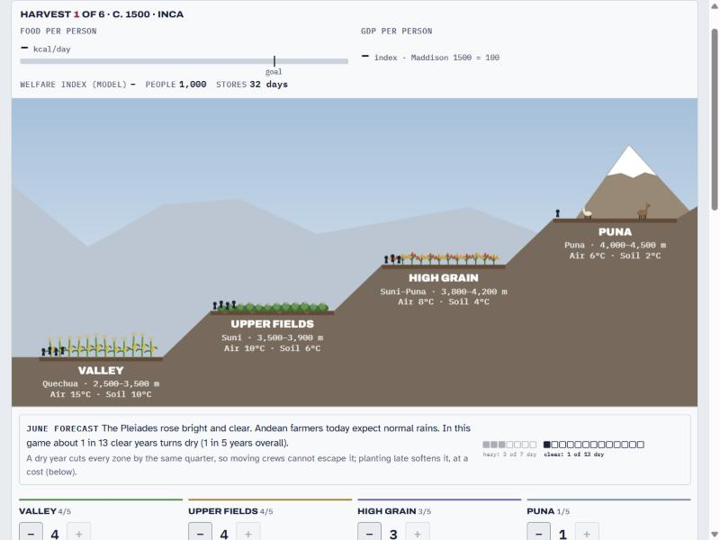
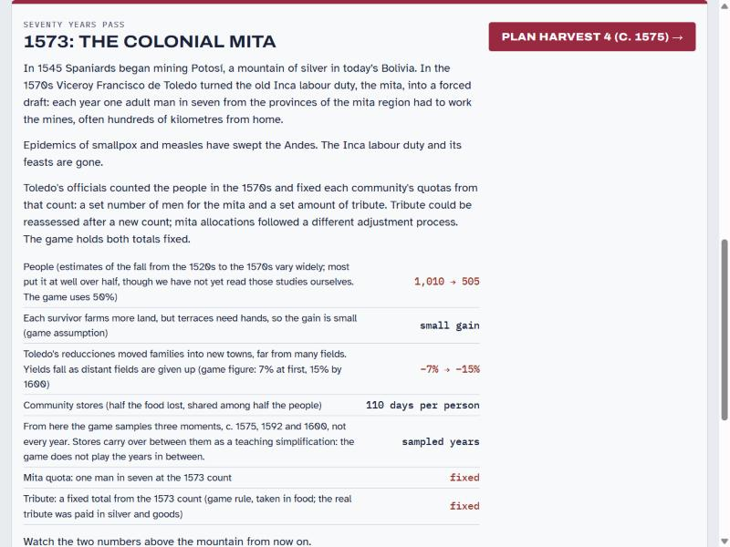
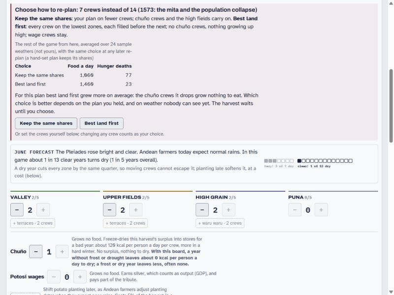

Your first playthrough: what to notice
A guide to play beside the game, harvest by harvest. It tells you where to look and what to ask. It does not tell you what to conclude. That is your job, and the end screen will check it.
Before you start
- Open the game in a second tab or window, so you can read this page as you play.
- Answer the two prediction questions honestly, and write a sentence about why. Your prediction about food is graded at the end. Your guess about GDP is not.
- Under Weather, choose Standard (seed 12345). Everyone who picks it gets the same frosts, droughts and forecasts, so differences between your results and a classmate's come from your choices, not from luck.
- For a first run, consider leaving the crew board as the game sets it. Then your screens will match the reference numbers hidden in the boxes below, at least until your first re-plan, and you can check you are reading the game correctly. Afterwards, replay with the same weather and change one thing.
Numbers marked game figure are the game's own choices, not historical measurements. The game labels them the same way.
Three years in a row

Where to look
- The two numbers at the top: food per person (kcal a day, goal 1,700) and GDP per person (an index where Maddison's 1500 estimate is 100). Follow both for the whole game.
- The June forecast appears before each harvest. Read whether the Pleiades rose clear or hazy, and what the game says that means for rain.
- The crew board: each field holds 5 crews game figure. Higher fields freeze more often, and in this game frost always comes down from the top.
- The harvest report: read it line by line. Look for Grown, Lost to frost, Inca feasts and rations and Freeze-dried into community stores.
Where the Inca rules act
Each report says that one man in ten worked the state and temple fields under the Inca labour duty, and that part of that harvest came back as feasts and rations game assumption: half the state harvest. Find that line every year. You will need it later.
Which lines in the report add food, and which take it away? Where does the chuño go, and when might you want it?
Check your screens: the reference run, harvests 1–3
| Harvest | Forecast | What happened | Food | GDP | Stores |
|---|---|---|---|---|---|
| 1 · c. 1500 | clear | Frost down to High grain, −250; feasts +85 | 1,700 | 102 | 54 days |
| 2 · c. 1501 | hazy | Rains came anyway; frost to High grain, −250; feasts +85 | 1,700 | 102 | 75 days |
| 3 · c. 1502 | clear | No frost; feasts +98; 10 more people (1,010) | 1,890 | 105 | 110 days |
Food in kcal per person per day. Stores began at 32 days.
1573: the colonial mita

This screen is where the rules change. Read each row and sort it into one of two kinds: what history records, and what the game assumes. The screen itself tells you which is which.
- Mining at Potosí began in 1545. In the 1570s Viceroy Toledo turned the Inca labour duty into a forced draft: each year one adult man in seven from the provinces of the mita region went to the mines. Your community is one of them.
- The Inca labour duty and its feasts are gone. Find the feasts line in your next report. Is it still there?
- People fall by half game figure: 50%. The game notes that estimates of the real fall vary widely.
- Quotas are fixed at the 1573 count. The game holds both the mita quota and the tribute total fixed, and takes the tribute in food game rule. The real tribute was paid in silver and goods.
- Resettlement into towns (reducciones) lowers yields, more as time goes on game figure: 7% at first, 15% by 1600.
- From here the game samples three years, c. 1575, 1592 and 1600, and does not play the years between them.
If a tribute total stays fixed while the number of people falls, what happens to each person's share of it?
The re-plan: fewer crews

With half the people you have half the crews. The game stops and asks how to spread them: keep your plan's shares, put every crew on the best land first, or set the crews yourself.
- Read the small table. Its averages come from 24 sample weathers, not yours, and the game says the better choice depends on the plan you held.
- Notice the new control on the board: Potosí wages. Read what the game says those crews do and do not produce.
- Write down which choice you made and why. The report you can copy from the end screen lists your re-plans, and your teacher may ask.
What does a chuño crew grow? What does a wage crew grow? What does each add to GDP?
Watch the two numbers
- c. 1575. Compare the report with your Inca reports. Which line is new, and which has gone? A milestone may pop up. Read it before you close it.
- c. 1592. The game reports epidemics in 1585–91 game figure: about 15% died, and you may have to re-plan again. Before you press Bring in harvest, read the June forecast and the note under Plant late.
- c. 1600. Resettlement now costs the most it will. Look at what is left in your stores.
In every colonial report, find the sentence that says what share of the harvest the tribute took. Write the three percentages down side by side.
GDP per person and food per person: did they move in the same direction? Which lines in the report explain each one?
Check your screens: the reference run, harvests 4–6
| Harvest | Forecast | What happened | Food | GDP | People |
|---|---|---|---|---|---|
| 4 · c. 1575 | clear | Re-plan 14 → 7 crews; tribute 23% of the harvest; goal met only by drawing on stores | 1,700 | 108 | 505 |
| 5 · c. 1592 | hazy | Re-plan 7 → 6 crews; a dry year; tribute 40%; stores run out; 4 people die of hunger | 1,430 | 107 | 425 |
| 6 · c. 1600 | hazy | Rains came; frost down to Upper fields; tribute 35%; 23 people die of hunger | 1,100 | 112 | 403 |
The reference run chose Best land first at both re-plans and never ticked Plant late. Your numbers will differ if you chose differently, and that difference is worth explaining.
Reading the end screen
The end screen compares your game with other versions of the same weather. Go through it in this order, and answer each question in your own words before you open the next part.
- The headline chart. Two lines, with the Inca years set to 100. Was your food prediction right? The screen grades it.
- Your community after 1573. Food a day, people lost to hunger, stores left, and households short. The household share is a model guess. Why might an average hide hungry households?
- Why food fell. This compares your colonial years with the same people and the same weather under Inca rules. Find the biggest bar. Which 1573 rule is it, and why does it bite harder when there are fewer people?
- Why GDP rose (not graded). The game splits the change into silver, field work lost and everything else, and says the split is the model's, not a finding about the 1500s. Did any of the silver feed anyone in your community?
- Your plan against one you could have chosen. Your result sits beside a plan chosen before playing and a best-in-hindsight plan that nobody could have chosen. Which of the two is a fair comparison for your own play, and why?
- The closed sections. Open What would have to be true for this to reverse? and move one slider at a time. Then read What the record suggests.
Last, press Replay with the same weather, change one choice (a re-plan, a build, planting late on a hazy year), and see what moves. The game puts the runs side by side.
Game or history?
The game is a model, not a reconstruction. Its evidence register at commit d64a632 records how far each claim is supported. A few that this walkthrough repeats:
| What the game says | Register status |
|---|---|
| Maddison's GDP per person for Latin America as a whole: 416 in 1500, 438 in 1600 (informed guesses, not Andes-specific) | supported |
| Mining at Potosí began in 1545 | partly supported |
| Toledo's mita drew one man in seven from the provinces of the mita region | partly supported |
| Andean farmers read the coming rains from the Pleiades in June (documented in modern communities) | partly supported |
| Inca labour duty on state and temple fields; reducciones; the 1585–91 epidemics; a fall of well over half | unverified |
| Tribute taken in food as a fixed total; half the state harvest returned as feasts; 50% and 15% population falls; resettlement losses | game assumptions, labelled in the game |
| Food fell from about 1,700 to about 1,200 kcal a day | unsourced: the original course's teaching figure, with no source the game could confirm |
You will see that 1,200 figure as a line labelled course on the end screen's food chart. Treat it as a teaching figure, not a measurement.
How the reference numbers were made
Every number on this page comes from playing projects/02/index.html on 22 November 2026. The file was from this repository's main at 367e998, and it is the same file as Frost & Silver's upstream main at d64a632. The run used a local server and a desktop browser. To reproduce it:
- Predictions: food will fall; GDP rises from both. Weather: Standard (seed 12345). Name: a made-up one.
- Keep the starting board in every harvest: Valley 4, Upper fields 4, High grain 3, Puna 1, Chuño 2. Build nothing, never tick Plant late, add no wage crews.
- Bring in each harvest one at a time, without Play.
- At both re-plans (harvest 4, 14 → 7 crews; harvest 5, 7 → 6 crews), choose Best land first.
A second run from a fresh page load gave an identical copied report. A run that chose Keep the same shares at harvest 4 had the same frosts and droughts but different food and hunger, so these numbers do depend on the choices recorded here. If the game changes, these numbers may no longer match.